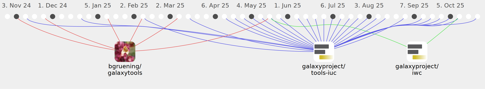

gxydevbot

Commits all-time: 177
Commits last year: 111

(99)
- dcee728
- 4492dcb
- 25e0d36
- 547a79c
- 2a3d084
- 00dc2cd
- f4604cc
- 582bdf8
- cb48fa8
- 3cb3d6a
- d6d6f4b
- 4e6f816
- 94585e4
- d4af7d3
- 99187c0
- 914a9c9
- aab64c2
- 4817c78
- e42ea8c
- d5994c4
- 1f7a012
- c02672d
- 4889f07
- cf000ec
- 80b32c4
- dada3de
- 72ff08f
- a629705
- 228a5f6
- 63fddba
- 16d8b8f
- 4f0593f
- e31c0e4
- 89f973d
- 00824dd
- 89581e9
- d884ec0
- 010bd37
- 90f5981
- 1790d60
- d294e6e
- 4478bc7
- 6693d8d
- 85fc9d9
- cd53955
- 121f8b5
- 905ce19
- 2a85342
- 462ec3a
- 72268e5
- 959b0a6
- 88cac1f
- 0e67883
- da3ee74
- 652c2b7
- 0807bc2
- 63ae6a6
- 9f0bad8
- 6f13ba9
- 56d3f71
- c1706f4
- eaaad7b
- f3e2c32
- fda0355
- eaa07f4
- 9a9c63e
- 73ffea5
- 273375a
- 89a03f6
- d64fadb
- 2c31bc6
- 42dc286
- e0ad9ce
- 714d006
- c69a3ef
- d683bd2
- de11e4b
- 50822e7
- 4b77f81
- f81b7ce
- 2ca3f9a
- 29098ae
- aa41edc
- 979ef0a
- 006f1a7
- c9d3b7b
- 3e9d741
- 1bd8a87
- 4d120e9
- 1fb19cc
- 89081e9
- a894d6d
- 5c108e0
- 139a5f4
- 7bd364d
- 0fc87e5
- c2803a8
- b60d302
- 7a6dc9a
(6)
(6)